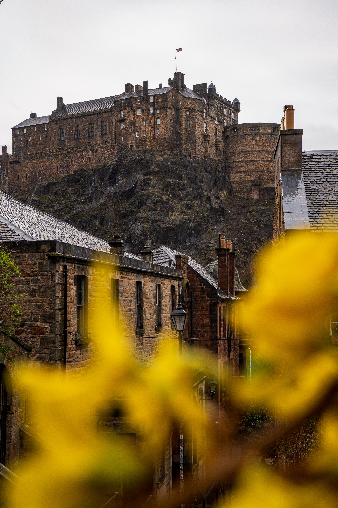

The United Kingdom (UK), comprising England, Scotland, Wales, and Northern Ireland, is an island nation in northwestern Europe. Known for its royal heritage, world-class museums, literary legacy, and vibrant music scene, it is steeped in history, iconic landmarks, and diverse landscapes. From the bustling streets of London and the medieval charm of Edinburgh to the picturesque countryside of the Lake District and the rugged beauty of the Scottish Highlands, the UK offers a mix of urban excitement and serene escapes.
The United Kingdom is famous for its historic castles, Gothic cathedrals, and UNESCO World Heritage Sites like Stonehenge and Hadrian’s Wall. Outdoor enthusiasts can hike in Snowdonia, drive through the Scottish Highlands, or visit the stunning Giant’s Causeway in Northern Ireland. British cuisine, once underrated, is now a global hotspot for gastronomy, with traditional fish and chips, full English breakfasts, and afternoon tea complemented by Michelin-starred restaurants and modern culinary innovations.